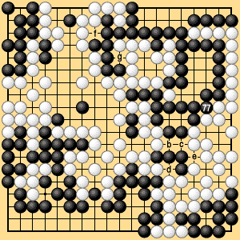

| 6.1 Normal Case (10) |
|---|
|
As this example shows, if both players judge the preliminary end of the game correctly, then all that remains is an even number of neutral points. Each player can occupy half of these; then they can agree that the game has ended and count the score. Under area rules III it is necessary for Black to play 277, the last competitive move, and for White to pass. The game is correctly finished when Black plays 277. (This means that the remaining moves can be omitted, even though the rules require them to be played.) Under territory rules I it may even be possible for the players to agree to stop at White 276, taking cognizance of the odd number of neutral points. The question of an even or odd number of neutral points is only significant because of the rule of equal numbers of moves after the preliminary end. If the players agree to skip the moves after the preliminary end, they can also omit the moves on neutral points without affecting the result. The players can therefore agree that the game has ended at White 276. It bears repeating that under area rules III, in which stones are counted in the score, the game cannot end by agreement until Black plays 277 in Dia. 6-2-2. It is convenient to remember the following fact. |
|  |
| Dia. 6-2-2 (277) |
|---|
|
On a go board with an odd number of lines, if the number of vacant points which neither player can occupy at the end of the game is even (including zero), and if Black makes the last competitive move, then the difference between the scores is even. If White makes the last competitive move, the difference is odd. If the number of vacant points that cannot be occupied is odd, these relations are reversed: if Black makes the last competitive move the difference is odd; if White makes the last competitive move the difference is even. Vacant points that cannot be occupied occur as neutral points in seki positions. Under area rules III the difference is even or odd according to whether White or Black makes the last competitive move, so if only one side's score is counted, it is possible to check for one-point counting mistakes (assuming no counting mistakes of more than one point are made). The above relationships are reversed in a handicap game when the handicap is even. |